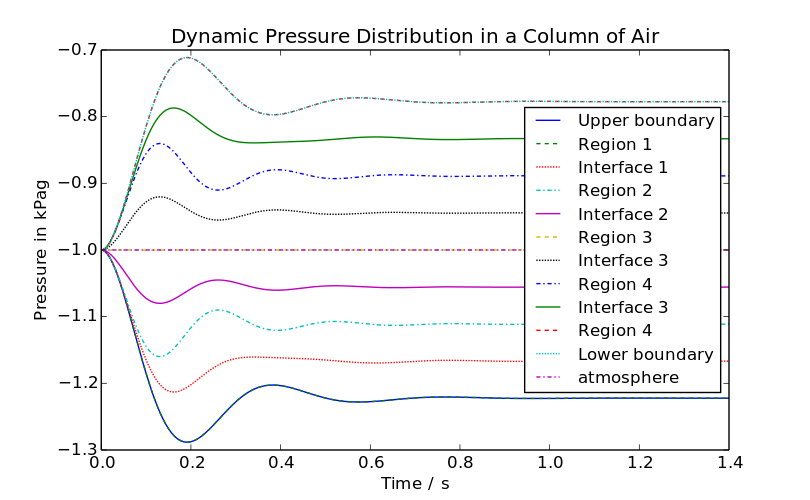
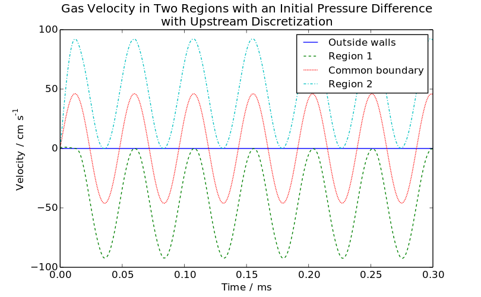
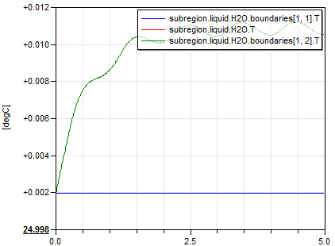
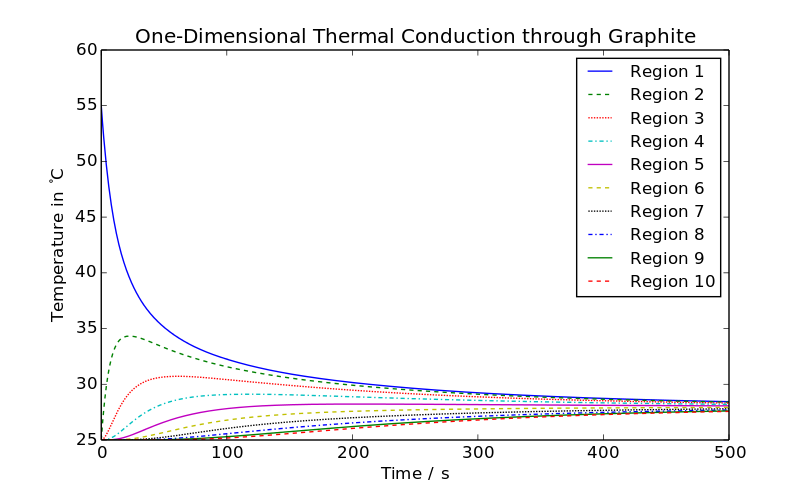
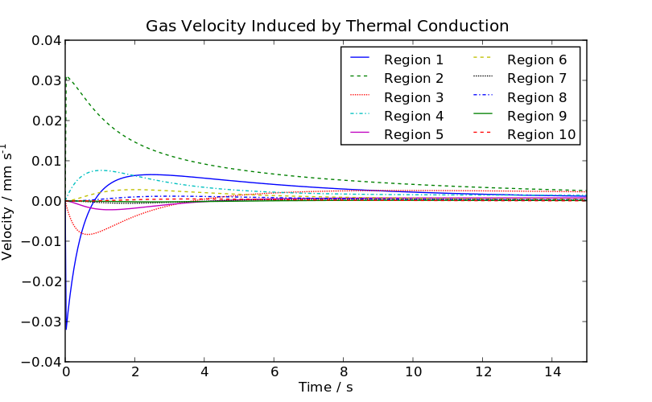

Table of Contents
- User's Guide
- Blocks
- Conditions
- Assemblies
- Regions
- Subregions
- Phases
- Species
- Chemistry
- Connectors
- Characteristics
- Units
- Quantities
- Utilities
- Icons
Download
- Latest: v0.2.1 (2014-01-15)
 FCSys.UsersGuide.SampleResults
FCSys.UsersGuide.SampleResults
Extends from Modelica.Icons.Information (Icon for general information packages).
Package Content
| Name | Description |
|---|---|
| Basic | |
| Cell-level |
FCSys.UsersGuide.SampleResults.Basic
The figures below show the results from several basic, low-level examples of FCSys. For more information, please follow the links to the associated models. For a complete discussion, please see [Davies, 2013]. There are additional examples throughout the library (e.g., FCSys.Subregions.Examples and FCSys.Characteristics.Examples).

Figure 1: Pressure oscillations and steady-steady pressure differences in a vertical column of gas initially at uniform temperature and density
(FCSys.Subregions.Examples.AirColumn).

Figure 2: Pressure waves reflecting across two 1 cm3 regions with an initial pressure difference
(FCSys.Subregions.Examples.Echo).

Figure 3: Temperature variation due to viscous dissipation under varying flow rate
(FCSys.Subregions.Examples.InternalFlow).

Figure 4: Thermal conduction through a graphite bar divided into segments, where the first segment is initially hotter
(FCSys.Subregions.Examples.ThermalConduction).

Figure 5: Velocity induced in gas in contact with graphite undergoing transient thermal conduction
(FCSys.Subregions.Examples.ThermalConductionConvection).
The models were simulated using Dymola 2014. The plots were generated using ModelicaRes and this Python script.
Extends from Modelica.Icons.Information (Icon for general information packages).
FCSys.UsersGuide.SampleResults.Cell
The figures below show the results from several basic, cell-level examples of FCSys. For more information, please follow the links to the associated models. For a complete discussion, please see [Davies, 2013]. There are additional examples in FCSys.Assemblies.Cells.Examples.

Figure 1: Polarization curves of the cell under various cathode flow rates
(FCSys.Assemblies.Cells.Examples.TestStand).
The models were simulated using Dymola 2014. The plots were generated using ModelicaRes and this Python script.
Extends from Modelica.Icons.Information (Icon for general information packages).